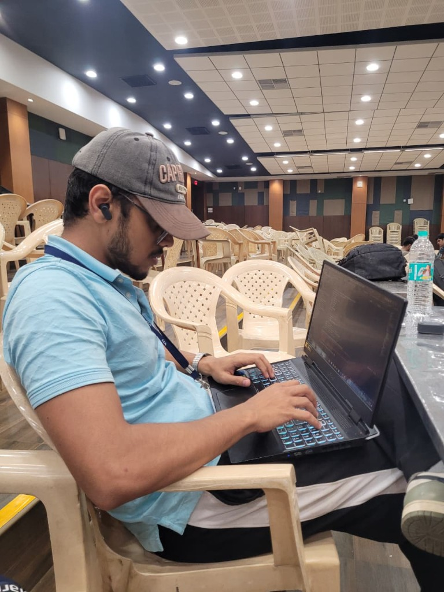

Information Science undergraduate at The National Institute of Engineering, Mysuru (CGPA: 8.60 / 10). Senior Secondary from Little Flower School, Gorakhpur with 91% distinction.
Passionate about building production-grade full-stack products, optimizing LLM inference costs with vector-based semantic caching, and writing clean, scalable software. Solved 500+ problems across LeetCode (Global Rank ~1533), GeeksforGeeks, and Codolio.
A comprehensive breakdown of core languages, artificial intelligence engineering, distributed backend frameworks, caching layers, and computer science foundations.
• C++: Primary choice for competitive programming and performance-critical algorithms (500+ problems solved). Deep understanding of memory pointers, references, and the Standard Template Library.
• Python: Extensively utilized for asynchronous microservices with FastAPI, Sentence-Transformers vector math, OpenCV computer vision pipelines, and Whisper speech models.
• JavaScript & SQL: Modern asynchronous event-driven programming, relational schema normalization, query optimization, and complex joins.
• Semantic Vector Caching: Built a production gateway using dense 384-dimensional embeddings (Sentence-Transformers) and cosine similarity cutoff at 0.85, achieving ~4ms cache hits and saving 100% of LLM inference cost on repeated or paraphrased prompts.
• RAG (Retrieval-Augmented Generation): Implemented vectorization of verified student placement archives with Gemini embeddings to eliminate LLM hallucinations.
• Multi-Provider Routing: Engineered fallback tunnels across Groq LPUs (ultra-low latency 14ms) and Gemini 1.5 Flash, with ordered multi-provider resilience.
• FastAPI: Built asynchronous microservices leveraging Pydantic data validation schemas, dependency injection, and automatic OpenAPI documentation.
• Express.js: Modular RESTful APIs with JWT authentication, password hashing, and custom college-email domain verification.
• Rate Limiting & Security: Token-bucket rate limiting via Flask-Limiter and Redis to protect public endpoints against abuse and brute-force traffic.
• Redis: In-memory caching for frequently queried placement and company data, cutting repeat query volume with graceful cache fallback.
• MySQL: Relational schema normalization and query optimization recording ~10ms average query latency in FinNIE.
• MongoDB: Document modeling for dynamic career roadmaps, senior review collections, and interview experiences.
• CI/CD Pipelines: Automated GitHub Actions workflows executing linting, unit testing (Jest & Supertest), build validation, and deployment on every pull request.
• API Verification: Comprehensive Postman test assertions and environment management across staging and production.
• Asymptotic Complexity: Rigorous Big-O time and space optimization, sliding windows, two pointers, prefix sums, tree traversals, and dynamic programming.
• Systems Fundamentals: Solid understanding of OS thread scheduling, process synchronization, HTTP/1.1 vs HTTP/2 protocols, and TCP handshakes.
A production-grade career preparation ecosystem tailored for engineering undergraduates. Resolves fragmented interview prep by synthesizing verified company archives into personalized weekly study tracks and contextual question simulations.
High-throughput API proxy gateway built with Python and FastAPI that dramatically curbs inference expenses and latency by serving semantically identical prompts from memory and intelligently routing queries.
all-MiniLM-L6-v2) and computes NumPy cosine similarity. Prompts exceeding a 0.85 threshold return in ~4ms at $0 cost.Award-winning assistive communication system built in a 24-hour sprint at DevJams VIT (ranking 4th out of 100+ national teams). Bridges communication gaps between the deaf/mute community and verbal speakers without human interpreters.
Full-stack campus item locator platform built with Flask and MySQL. Replaces chaotic social media lost-and-found posts with a centralized, searchable database featuring verified student identity matching.